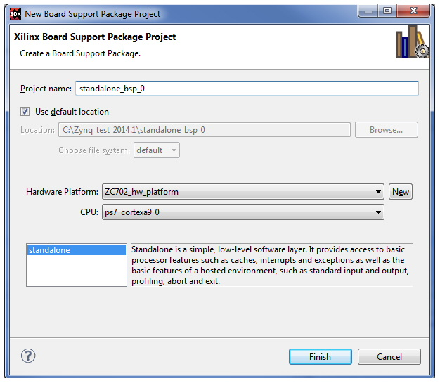
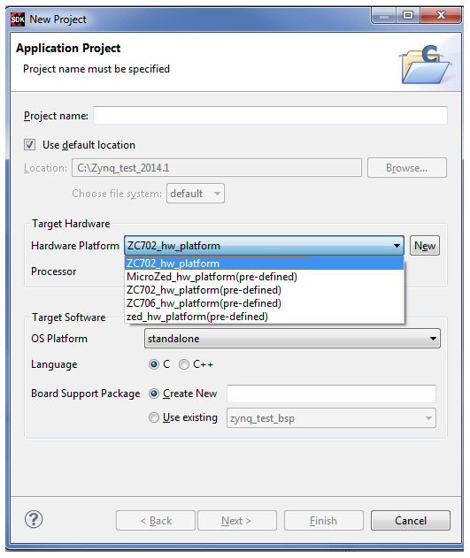

SDK requires that you specify a hardware platform specification file before you can start developing C/C++ application projects.
When launched from XPS, SDK specifies the hardware platform specification file as an argument and you can skip this step.
When using SDK for the first time with a given workspace, select File > New > Project > Xilinx > Hardware Platform Specification to open the New Hardware Project dialog box. In this dialog box, you can specify the location of the hardware platform specification file. When creating a new Xilinx C or C++ application project, SDK opens the New Hardware Project dialog box when the Create New option is selected in the Hardware Platform drop-down box.

SDK has pre-installed templates for a Zynq®-7000 AP SoC ZC702, ZC706, and ZED hardware platforms. You can use these templates while creating the new Application Project by selecting the appropriate hardware platform.

You can view the hardware platform specification of the hardware system by double-clicking the XML file under the hardware platform project in the Project Explorer view. SDK opens the hardware platform specification viewer, displaying the following overview information about the hardware design:
You can view the design report of the hardware system created by the Xilinx Platform Studio tool and exported to SDK. To open the hardware platform specification viewer, double-click on the XML file under the hardware platform project in the Project Explorer. In the hardware platform specification overview, click on the link to the HTML design report to open it in a browser and display the following information about the hardware design: